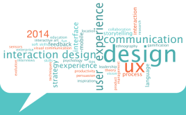
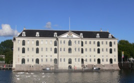
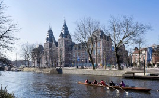
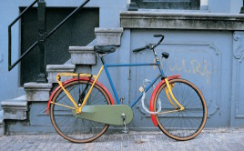
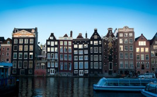

Newsletters
Klaus Krippendorf opening keynote
January 24, 2014 ⁞ Unfortunately, Peter Greenaway had to cancel his appearance due to a scheduling change in producing his current film, Eisenstein. This is of course priority for him and we spent these last days searching for another keynote speaker.
Join the conversation
January 6, 2014 ⁞ We wish everyone a happy and healthy 2014. There’s just one month to go until Interaction14. We look forward to welcoming the global IxDA community to Amsterdam. Although our three-day conference tickets sold out, you can still buy tickets for a single day and for the social events. Whether you’re…
A first look at evening activities
December 9, 2013 ⁞ Interaction14 wouldn’t be the same without some vibrant parties and evening activities. With Interaction14 just two months away, it’s time we talk you through the social program we’ve cooked up for you. Wednesday: Meet up at our Welcome Party Whether it’s your first Interaction conference or your seventh, the Welcome…
Plan your trip to Amsterdam
November 13, 2013 ⁞ Amsterdam has inspired artists and designers for ages. Names like Rembrandt, Van Gogh, Steen, Mondriaan and Berlage come to mind. From the Golden Age to the present day, design has played an important role in the city’s prosperity. During Interaction14, there will be two nights to explore Amsterdam. You may…
Announcement of the full program
October 14, 2013 ⁞ In less than four months, Interaction14 will conquer Amsterdam. We already feel the excitement building up in our community. Full conference program The conference features a broad spectrum of talks – everything from “The Interaction Design of the International Space Station” to “What my cat taught me about User Experience.”…
Three more inspiring keynotes
September 16, 2013 ⁞ We are honored to announce that Peter Greenaway, Daniel Rosenberg and Irene Au will be keynote speakers at Interaction14. Their insights, stories and experiences will entertain and inspire you. Three more inspiring keynotes Peter Greenaway — Peter has made 12 feature films and 50 short-films and documentaries, published books, written…
Everyone loves deadlines!
August 19, 2013 ⁞ Now there’s another reason to attend Interaction14. Gillian Crampton Smith has just agreed to be our third keynote speaker. Welcome our third keynote speaker Gillian Crampton Smith is an educator and pioneer in interaction design. She encourages design students to go beyond technical problem solving and to think innovatively about…
Announcing our first two keynotes
July 8, 2013 ⁞ In his book “The Search for the Perfect Language” Umberto Eco reminds us there was once perfect language that expressed, without ambiguity, the essence of all possible things and concepts. Is there a perfect language? Every language, every technology and design approach is a take on reality, a way to…
Four days of inspiration in Amsterdam
June 10, 2013 ⁞ IxDA is pleased to announce that Interaction14 will take place in Amsterdam – Europe’s melting pot of design and creativity. Get ready for four value packed days of workshops, presentations, social events and networking. The dates are February 5 – 8, 2014. Register early and save Early registration begins today…